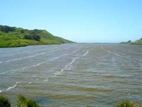
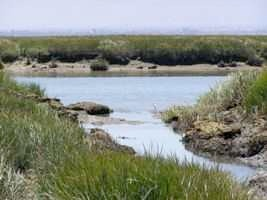
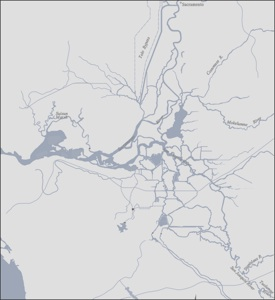
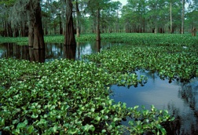
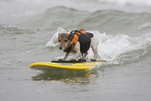

Transport Processes and Algae Bloom Dynamics in Rodeo Lagoon
[M. Cousins, M. Stacey]
Rodeo Lagoon, a small, eutrophic coastal lagoon that is seasonally connected to the Pacific Ocean, is located at the terminus of a small watershed in the Marin headlands within the Golden Gate National Recreation Area (GGNRA). The purpose of this project, which is being completed for and with the National Park Service/GGNRA, is to identify the physical transport processes in the lagoon that may act as triggers for large summer algae blooms. For example, internal recycling of nutrients may be triggered by wind-driven mixing and sediment resuspension. The blooms are of concern because they lead to anoxia throughout the lagoon. The project involves cooperation with Prof. Kara Nelson and her students, who are simultaneously investigating nutrient loading to the lagoon from its watershed.

Interaction of Large-scale Marsh Restoration with an Estuarine Ecosystem
[L. MacVean, M. Stacey]
This project uses field observations and numerical modeling to discern the effects of large-scale marsh restoration on Coyote Creek, a tidal slough at the edge of the South San Francisco Bay. The project focuses on changes in salinity and sediment transport dynamics, both in the creek and the evolving marsh.
Layer Organization in the Coastal Ocean (LOCO), sponsored by the Office of Naval Research
[M. Stacey]
Over the past two decades, technology advancements have led to the detection of thin layers of high biological activity in the coastal oceans. These layers are decimeters to meters thick in the vertical, but extend over broad horizontal scales and persist in time. This project is using high-resolution profiles of both physical and biological parameters in Monterey Bay to analyze the mechanisms that dominate the formation, maintenance and eventual dissipation of the layers

Inverse Modeling of Flows and Transport in the Sacramento-San Joaquin Delta
[W. Wagner, M. Stacey]
The Sacramento-San Joaquin Delta is of critical importance to the state of California as the center of its water delivery system. After a series of anthropogenic actions, the Delta finds itself ecologically imperiled. The impact climate change will have on the water temperatures in the Delta will affect the ecosystem through fish and invertebrate life functions. How large an effect climate change will have on water temperatures is, however, unknown. This project attempts to answer this question through a simple, computationally cheap model designed to accurately predict point water temperatures with a minimum amount of input. The model has been used to forecast water temperatures in the Delta over the next 100 years under four climate scenarios and to determine if thermal effects might have played a role in fish declines over the past 75 years. Although the model performs with high skill with historical data and covers much of the Delta, it does not address temperature variability on smaller scales. Upcoming field work will address questions of thermal gradients and mixing within a tidal slough, wherein smaller scale processes dominate.

Horizontal shear flows and lateral mixing in estuaries and the coastal ocean: Sediment transport in the shoal-channel estuary.
[A. Brand, A. Collignon, C. Holleman, M. Stacey]
The research project examines mixing and sediment transport in a shoal-channel estuary. The study site is the central part of the South San Francisco Bay between the San Mateo Bridge and the Dumbarton narrows. We analyze how lateral shear instabilities contribute to the exchange of water masses and sediment between shoal and channel. These instabilities are due to high velocity gradients between the channel and the shoal and lead to enhanced lateral circulation. Their role in the exchange between shoal and channel can be twofold: either the circulation interacts with vertical mixing. As a consequence, the exchange between shoal and channel might be intermittent and vary with the tidal timescale. Alternatively, the mixing may occur only when a shear instability has been generated. The exchange between shoal and channel would be highly intermittent in this case.
In addition to investigating the hydrodynamics of the system, we also focus on sediment transport. This requires a thorough characterization of the sediment dynamics of the system, including the variation of sediment resuspension. The sediment properties and the forces driving the resuspension show as well seasonal as tidal variability. The combined analysis of hydrodynamics and sediment dynamics in a shoal-channel estuary can extend significantly our understanding of mixing in flows characterized by sharp changes in topography or friction. This coupling also provides a direct link to broader impacts, including informing management decisions regarding the restoration of tidal marshes in San Francisco Bay.
Sediment dynamics and transport in the shoal-channel estuary
[A. Brand, J. Lacy, D. Hoover, K. Hsu, S. Gladding, M. Stacey]
Our study focuses on the sediment dynamics in the transition zone between the channel and shoal in the central part of the South San Francisco Bay.
Investigating the governing mechanisms of sediment dynamics is crucial in order to understand the overall exchange of sediment between shoal and channel. We will focus our research on following questions: 1) Can we observe a difference of resuspension and settling between spring and neap tide? 2) How and to what extent does wave induced shear contribute to sediment resuspension and transport? 3) What is the seasonal variation of these processes?
We install several stations along the transition line between shoal and channel during two campaigns in spring and fall. Measurements of laser scattering and optical and acoustic backscatter from the water column are used to quantify sediment concentration and particle size proxies. Concurrent determination of pressure and velocity at high temporal resolution allows us to quantify wave induced and turbulent stresses and resuspension fluxes.
Preliminary results show that wind induced waves contribute significantly to sediment resuspension. This mechanism is especially efficient during low tide since waves exert a higher bed shear stress when the water level is low.
The dependence of wave induced bed shear stress on the water level also leads to increasing sediment concentrations in the shallower parts of the estuary. Therefore we expect enhanced dispersive and advective transport of resuspended sediment towards the channel during wavy periods.

Transport and Dispersal of Floating Vegetation in the Sacramento-San Joaquin Delta
[M. Downing-Kunz, M. Stacey]
This project seeks to improve management of water hyacinth and other non-native rafting vegetation in the Delta through the development of a mechanistic understanding of raft transport and dispersal. Using field observations and detailed flume experiments, we examine the dynamics that determine the movement of floating vegetation mats.
The Sacramento River-San Joaquin River Delta (Delta) is a network of intersecting channels forced by tides of the San Francisco Bay and by freshwater flows of the Sacramento and San Joaquin Rivers. The native flora and fauna of the Delta are increasingly threatened by non-native aquatic invasive species that compromise the native ecosystem and negatively affect commercial, recreational, and agricultural activities. One example of a non-native species affecting the Delta is the water hyacinth (Eichhornia crassipes), a free-floating aquatic macrophyte. Water hyacinth grows rapidly in slow-moving waters, forming large mats that are transported by winds and currents. In the Delta, water hyacinth is found in sloughs, connecting waterways, and tributary rivers and causes a range of problems including: blocking canals and waterways, closing marinas, fouling irrigation pumps, displacing native plants, reducing dissolved oxygen in the water, and depositing silt and organic matter more rapidly. Currently, water hyacinth growth is controlled predominantly by herbicide application.

Methods for Wave/Turbulence Decomposition
[K. Hsu, A. Brand, M. Stacey]
Time series data collected from environmental flows can generally be understood as being composed of a steady mean value combined with various fluctuating components. Analysis of such data often requires decomposition of the fluctuating components into two parts, waves and turbulence, in order to further investigate the hydrodynamic processes occurring. Waves and turbulence are two fundamentally different types of motion that both contribute to variability in time series data, often at overlapping frequencies, making it difficult to separate the two within the data. The project investigates the effectiveness of various methods to accomplish wave/turbulence decomposition.